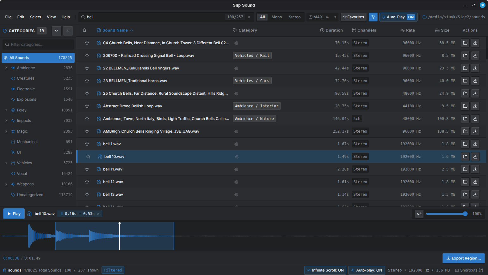

Find the right sound in a folder of 170,000 without waiting on anything.
Slip Sound is a desktop sample manager for Windows, macOS, and Linux. Point it at a folder, it indexes every audio file, and search returns in under 0.2 seconds. Everything stays on your drive. Free, GPL-licensed, no account.
- Index 170k files
- ~2 min
- Search
- < 0.2 s
- Export
- WAV 16/24/32 · OGG
- Platforms
- Windows · macOS · Linux
- Price
- $0
- Network calls
- 0

1 2 3 4 5 6- 1Categories with live counts, auto-tagged on index
- 2Search: 100 of 257 matches across 178,825 files
- 3Filter by channels, max duration, favorites
- 4Click a category chip to reassign it
- 5Drag across the waveform to select and loop a region
- 6Export only that region, or drag it into your DAW
01Features
Browse, audition, trim, export. The things you do fifty times an hour are one key or one drag.
- Instant search
- Filter by name, channels, duration, favorites, or category. Results update as you type.
- Auto-categorize
- Files are tagged on index from their names and paths. Can be turned off in Settings.
- Manual overrides
- Reassign or clear any category. Your changes survive reindexes.
- Waveform preview
- Click to seek, drag to select, loop the selection. Auto-play as you arrow through the list.
- Region export
- Export just the selected slice, or drag it straight out of the app.
- DAW drag & drop
- Drag one file or a whole selection into Reaper, Ableton, FL Studio, Godot, Unity.
- Batch exporter
- WAV at 16, 24 or 32-bit, or OGG Vorbis. Any sample rate. Numbered or lettered output names.
- Favorites
- Star sounds and filter down to just those.
- Sortable table
- Sort by name, category, duration, channels, rate, or size.
- Reveal in folder
- Jump to any file in your system file manager.
- Keyboard-driven
- Every action has a shortcut. Press ? in the app for the guide.
- Reopens where you left off
- Your last library loads on launch.
02How it stores things
The index lives inside the folder it describes.
Every folder you open gets its own SQLite file at its root. Index once, and reopening is instant. Reindex only when you've added or changed files. There's no central catalog and no hidden app-data blob, so the index moves with the folder to another drive or machine.
03Shortcuts
- Play / pause
- Space
- Focus search
- Ctrl F
- Previous / next sound
- ↑ ↓
- Open folder
- Ctrl O
- Jump to top / bottom
- Home End
- Toggle category sidebar
- Ctrl B
- Add to selection
- Ctrl Click
- Export selection / region
- Ctrl E
- Select range
- Shift Click
- Toggle auto-play
- Alt A
- Select all matches
- Ctrl A
- Help guide
- ?
04MCP server
Optional. Lets Claude Desktop, Cursor, or VS Code search, tag, and export your library.
Off by default; enable it in Settings. It binds to 127.0.0.1 only, mints a new bearer token each launch, and checks Origin/Host headers to block browser DNS-rebinding. Settings shows the URL and token ready to paste into an mcpServers block.
- search_sounds
- Filter by name, category, channels, duration, favorite
- list_uncategorized_sounds
- Page through untagged sounds for an agent to sort
- set_category / clear_category
- Tag or untag a sound
- export_sound
- Export, optionally trimmed, to WAV/OGG
- get_sound · get_categories
- Metadata and facet counts
- toggle_favorite
- Star or unstar
- open_library · reindex_library
- Switch folders, rescan for changes
- reveal_in_folder
- Open the file's location
05Download
Each release ships SHA256 checksums alongside the binaries.
# Linux sha256sum -c SHA256SUMS-linux.txt # macOS shasum -a 256 -c SHA256SUMS-mac.txt # Windows — compare against SHA256SUMS-windows.txt certutil -hashfile slip-sound-Setup.exe SHA256
06Instead of
A free, local alternative to Soundly, BaseHead, Soundminer, Resonic, AudioFinder, Sononym, and ADSR Sample Manager.